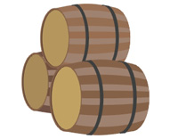

1.- Relaciones entre clases.

Cuando estudiaste el concepto de clase, ésta fue descrita como una especie de mecanismo de definición (plantillas), en el que se basaría el entorno de ejecución a la hora de construir un objeto: un mecanismo de definición de objetos.
Por tanto, a la hora de diseñar un conjunto de clases para modelar el conjunto de información cuyo tratamiento se desea automatizar, es importante establecer apropiadamente las posibles relaciones que puedan existir entre unas clases y otras.
En algunos casos es posible que no exista relación alguna entre unas clases y otras, pero lo más habitual es que sí la haya: una clase puede ser una especialización de otra, o bien una generalización, o una clase contiene en su interior objetos de otra, o una clase utiliza a otra, etc. Es decir, que entre unas clases y otras habrá que definir cuál es su relación (si es que existe alguna).
Se pueden distinguir diversos tipos de relaciones entre clases:
- Clientela o uso. Cuando una clase emplea objetos de otra clase (por ejemplo, al pasarlos como parámetros a través de un método o al declarar objetos como variables locales dentro del cuerpo de un método).
- Composición, agregación, asociación. Cuando alguno de los atributos de una clase es una referencia a un objeto de otra clase. Dependiendo de la dependencia entre el objeto "contenedor" y el "contenido" se puede hablar de unos casos u otros. En el caso de la composición entendemos que la existencia de los objetos contenidos es imprescindible para que pueda existir el objeto contenedor, de manera que se suelen instanciar en el constructor de la clase contenedora; mientras que si se trata de objetos que el objeto contendor puede incluir, pero también puede no hacerlo, se suele hablar de agregación. Además, en este caso, el objeto contenido podría existir de manera independiente a la existencia del objeto contenido. En el caso de la asociación, se trata de objetos que pueden existir de manera independiente, aunque en un momento dado pueden tener que algún tipo de relación entre ellos.
- Anidamiento. Cuando se definen clases en el interior de otra clase. Se trataría de un tipo muy específico de composición en la que no solo ya la dependencia entre los objetos interiores y contenedores es muy fuerte, sino que incluso la definición de la clase interior solo existe dentro de la clase contenedora. Este tipo de relación es muy dependiente de la implementación del lenguaje con el que se vaya a trabajar (Java, C++, Ruby, Python, etc.).
- Herencia. Cuando una clase comparte determinadas características con otra (clase base), añadiéndole alguna funcionalidad específica (especialización). A esto será a lo que nos dedicaremos durante la mayor parte de la unidad.
La relación de clientela la llevas utilizando desde que has empezado a programar en Java, pues desde tu clase principal (clase con método main) has estado declarando, creando y utilizando objetos de otras clases. Por ejemplo: si usas un objeto String dentro de la clase principal de tu programa, éste será cliente de la clase String (como sucederá con prácticamente cualquier programa que se escriba en Java). Es la relación fundamental y más habitual entre clases (la utilización de unas clases por parte de otras) y, por supuesto, la que más vas a utilizar tú también. De hecho, llevas haciéndolo desde que aprendiste a trabajar con objetos.

La relación de composición es posible que ya la hayas tenido en cuenta si has definido clases que contenían (tenían como atributos) otros objetos en su interior, lo cual es bastante frecuente. Por ejemplo, si implementas una clase donde alguno de sus atributos es una fecha (un objeto de tipo LocalDate) ya se está produciendo una relación de tipo composición (tu clase “tiene” una fecha, es decir, está compuesta por un objeto LocalDate y por algunos elementos más).
La relación de anidamiento (o anidación) es quizá menos usual, pues implica declarar unas clases dentro de otras (clases internas o anidadas). En algunos casos puede resultar útil para tener un nivel más de encapsulamiento y ocultación de información. Un ejemplo típico de anidamiento es el de las clases anónimas, que suelen utilizarse en contextos donde hay que definir manejadores de eventos, como puede ser el caso de las interfaces gráficas de usuario.
En el caso de la relación de herencia se trata de unas clases que derivan de otras. Un ejemplo en el que se produce habitualmente es en el caso de los objetos que forman parte de las interfaces gráficas, donde un componente hereda propiedades de sus ascendientes. Más delante lo verás al declarar componentes gráficos que hereden de algún otro componente (JFrame, JDialog, etc.).
Podría decirse que tanto la composición como la anidación son casos particulares de clientela, pues en realidad en todos esos casos una clase está haciendo uso de otra (al contener atributos que son objetos de la otra clase, al definir clases dentro de otras clases, al utilizar objetos en el paso de parámetros, al declarar variables locales utilizando otras clases, etc.).
A lo largo de la unidad, irás viendo distintas posibilidades de implementación de clases haciendo uso de estas relaciones, centrándonos especialmente en el caso de la herencia, que es la que permite establecer las relaciones más complejas y enriquecedoras.
Relación entre dos clases donde una de ellas (la subclase) es una versión más especializada que la otra (la superclase), compartiendo características en común pero añadiendo ciertas características específicas que la especializan. El punto de vista inverso sería la generalización.
Relación entre dos clases donde una de ellas (la superclase) es una versión más genérica que la otra (la subclase), compartiendo características en común pero sin las propiedades específicas que caracterizan a la subclase. El punto de vista inverso sería la especialización.
Consiste en el ocultamiento del estado de un objeto (de sus datos miembro o atributos) de manera que sólo se puede cambiar mediante las operaciones (métodos) definidas para ese objeto. Cada objeto está aislado del exterior de manera que se protegen los datos contra su modificación por quien no tenga derecho a acceder a ellos, eliminando efectos secundarios y colaterales no deseados. Este modo de proceder permite que el usuario de una clase pueda obviar la implementación de los métodos y propiedades para concentrarse sólo en cómo usarlos. Por otro lado se evita que el usuario pueda cambiar su estado de manera imprevista e incontrolada.
Es el efecto que se consigue gracias a la encapsulación: se evita la visibilidad de determinados miembros de una clase al resto del código del programa para de ese modo comunicarse con los objetos de la clase únicamente a través de su interfaz (métodos).